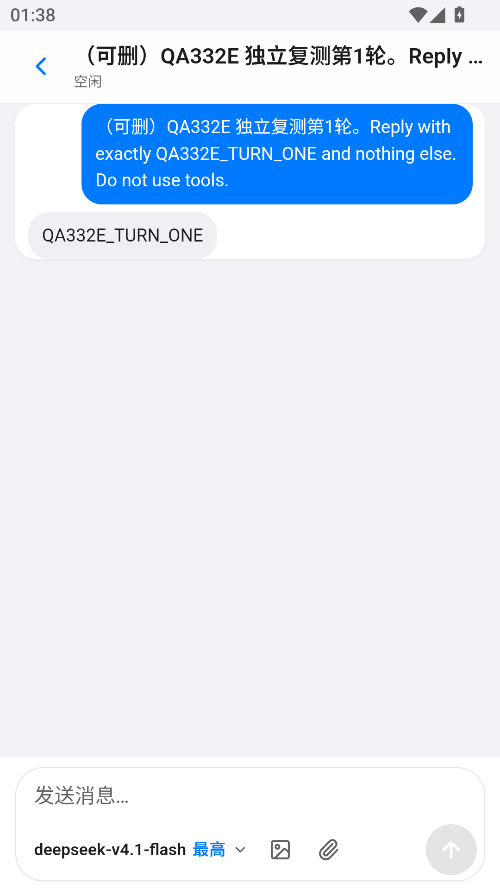
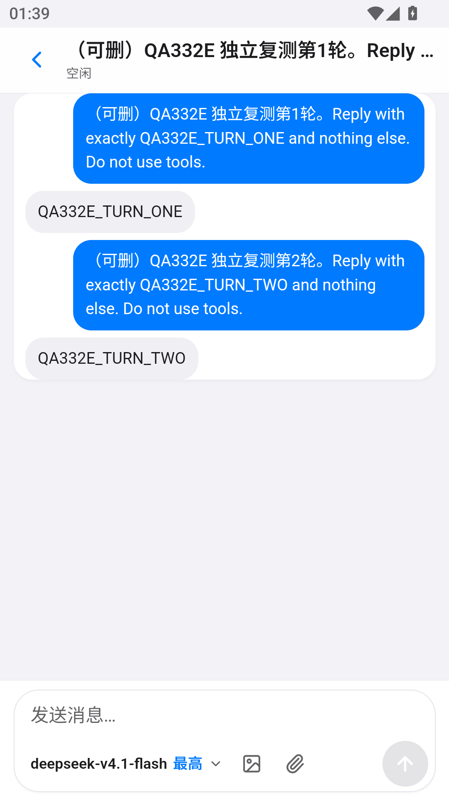

两个上轮限制
| 项 | 本轮结果 |
|---|---|
| 限制① 桥可用性（只读 host/invoke） | 通过 · success 13ms / success 38ms |
| 限制① 热重载后自有连接恢复 | 通过 · 重载后 6ms success，无 EADDRINUSE |
| 限制② 真实 PI 连续两轮 | 通过 · QA332E_TURN_ONE / QA332E_TURN_TWO |
门禁
| 项 | 结果 |
|---|---|
| 独立 CI（Node 24/22） | 393/393 pass · fail 0 · cancelled 0 |
| 桥生命周期专项 | 2/2 |
| 发送前 409 缓存专项 | 2/2 |
两轮落库（rollout）
| turn | 事件 | 时长 |
|---|---|---|
1e543ac9-1a04-4f11-9d76-c36c8effc210 | task_started | — |
1e543ac9-1a04-4f11-9d76-c36c8effc210 | task_complete | 2205 |
27b474cf-1935-46af-859d-13183b0de23d | task_started | — |
27b474cf-1935-46af-859d-13183b0de23d | task_complete | 3008 |
原生截图（1080×1920）

1080×1920 · 109591 B · 26e0b2df3038b727…
1080×1920 · 153826 B · c1980801ed2e8278…